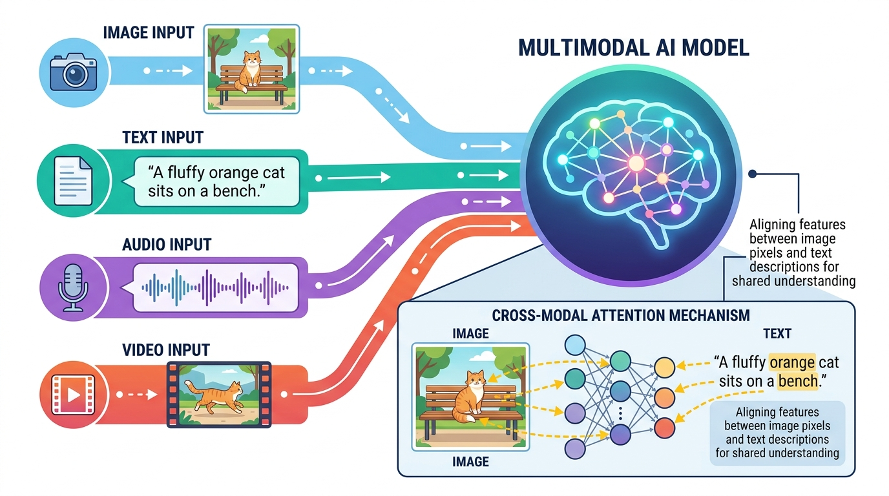

"The world is not made of words alone. To truly understand it, a machine must learn to see, hear, and read the messy, beautiful reality that surrounds us."
A Multimodal AI Agent

Large language models began as text processors, but the frontier of AI has moved decisively toward multimodal systems that generate and understand images, audio, video, and structured documents alongside text. This module covers the complete landscape of multimodal AI, from diffusion models that create photorealistic images to speech synthesis systems that clone voices from seconds of audio, video generators that produce cinematic content from text prompts, and document understanding pipelines that extract structured data from scanned pages.
The module begins with image generation and vision-language models, exploring how systems like Stable Diffusion, DALL-E, and Midjourney work at an architectural level, along with the vision encoders and multimodal LLMs (GPT-4V, LLaVA, Gemini) that let models see and reason about images. It then covers audio and video generation, including text-to-speech, music synthesis, and the emerging world of text-to-video models like Sora. Finally, it addresses document AI, where OCR, layout analysis, and language models combine to extract information from real-world documents, a capability that feeds directly into LLM-powered applications.
By the end of this module, you will understand how modern generative models work across modalities, be able to build pipelines that combine text with images, audio, and video, and know how to choose the right approach for document understanding tasks. These skills complement the embedding and vector search techniques covered earlier, enabling you to retrieve and generate content across multiple modalities.
Who: A product team at a mid-size online real estate marketplace.
Situation: Agents frequently uploaded floor plans but lacked professional interior photos for new construction listings, reducing buyer engagement by 40%.
Problem: Hiring photographers for every unfinished property was too slow and expensive, costing $300 per listing and taking three to five days.
Dilemma: They could wait until construction finished (losing early buyer interest) or generate realistic staged images from floor plans and architectural sketches.
Decision: They built a pipeline using ControlNet with Stable Diffusion XL, conditioning on floor plan outlines to generate photorealistic room images in multiple interior styles.
How: Floor plans were preprocessed into edge maps, then fed to ControlNet alongside text prompts describing furniture style, lighting, and materials. A human reviewer approved each batch before publication.
Result: Listing engagement rose 55%, time to first inquiry dropped from 12 days to 4, and per-listing image cost fell to under $2.
Lesson: Controlled image generation can fill content gaps in industries where original photography is expensive or impractical, provided human review stays in the loop.
Who: The engineering team at a popular science podcast network with 2 million English-language subscribers.
Situation: The network wanted to expand into Spanish, Portuguese, and Japanese markets without hiring separate hosts for each language.
Problem: Traditional dubbing sounded robotic and lost the hosts' distinctive vocal personality, which listeners cited as the top reason for subscribing.
Dilemma: They could use generic TTS (fast but impersonal) or have human voice actors re-record every episode (authentic but costing $8,000 per episode per language).
Decision: They used a voice cloning pipeline built on F5-TTS, fine-tuned on 30 minutes of each host's speech, combined with high-quality machine translation.
How: Episodes were transcribed, translated by a specialized translation model, reviewed by native speakers, then synthesized using the cloned voice model. Prosody and pacing were adjusted per language.
Result: The network launched in three new languages within two months. Listener surveys showed 82% of new subscribers could not distinguish the cloned voice from a native speaker. Per-episode cost dropped to $400 across all three languages.
Lesson: Voice cloning enables scalable multilingual content creation, but quality depends on combining good translation with careful prosody tuning, not just raw TTS output.
Who: The claims operations team at a mid-size auto insurance provider handling 15,000 claims per month.
Situation: Each claim required manual review of police reports, repair estimates, medical bills, and photos, with an average processing time of 11 days.
Problem: Documents arrived in inconsistent formats: scanned PDFs, smartphone photos of handwritten forms, emailed spreadsheets, and faxed pages with coffee stains.
Dilemma: Rule-based OCR caught only 60% of fields correctly; hiring more claims adjusters would increase headcount costs by $1.2 million annually.
Decision: They deployed a LayoutLMv3 pipeline for structured document extraction, combined with GPT-4V for interpreting damage photos and handwritten notes, leveraging the tokenization strategies that underpin modern document models.
How: Documents were classified by type, then routed to specialized extraction models. LayoutLMv3 handled invoices and forms; GPT-4V described vehicle damage from photos. A confidence threshold flagged uncertain extractions for human review.
Result: Average processing time fell from 11 days to 3 days. Field extraction accuracy reached 94%, and the team redirected 40% of adjusters to complex cases requiring human judgment.
Lesson: Combining layout-aware document models with vision-language models handles the messy reality of real-world documents far better than any single approach. Teams building such pipelines can orchestrate them through multi-agent architectures for even greater automation.
Who: The pre-production team at an independent film studio working on a science fiction feature.
Situation: The director needed previsualization (previs) sequences to secure funding, but traditional 3D previs would cost $50,000 and take six weeks.
Problem: Investors wanted to see key scenes before committing, and static storyboards failed to convey the intended mood and pacing.
Dilemma: Spending the full previs budget risked the project if funding fell through; skipping previs risked losing investors entirely.
Decision: They generated 90-second previs clips using a text-to-video model (Runway Gen-3), guided by detailed scene descriptions and reference images.
How: The team wrote detailed prompts for each shot, specifying camera movement, lighting, and character positioning. They generated multiple variations per scene and edited the best takes into a cohesive sequence.
Result: The previs reel was completed in four days at a cost of $800. Investors greenlit the project, and several generated shots directly influenced the final cinematography plan.
Lesson: Text-to-video is not yet ready to replace final production, but for rapid prototyping and concept communication, it dramatically reduces cost and turnaround time.
Asking a diffusion model to generate "a horse riding an astronaut" instead of "an astronaut riding a horse" is a rite of passage in multimodal AI. The results are a humbling reminder that these models understand pixels far better than prepositions. Compositionality remains one of the great unsolved puzzles (closely related to the text representation challenges in NLP), and every new model release is judged partly by how well it handles spatial relationships that a five-year-old grasps instantly.
Voice cloning technology has advanced so quickly that researchers now worry about a future where your phone rings, the caller sounds exactly like your boss, and the only defense is a safe word you both agreed on last Tuesday. The same technology that lets a podcast reach global audiences also keeps trust-and-safety teams up at night, which is why every serious deployment includes watermarking, consent verification, and a healthy dose of caution. For a deeper look at these safety considerations, see Module 27 on Safety, Ethics and Regulation.
Rombach, R., Blattmann, A., Lorenz, D., Esser, P., & Ommer, B. (2022). "High-Resolution Image Synthesis with Latent Diffusion Models." arXiv:2112.10752
Introduces Stable Diffusion's latent diffusion architecture, the foundation of most open-source image generation systems.
Radford, A., Kim, J. W., Hallacy, C., Ramesh, A., Goh, G., Agarwal, S., Sastry, G., Askell, A., Mishkin, P., Clark, J., Krueger, G., & Sutskever, I. (2021). "Learning Transferable Visual Models From Natural Language Supervision." arXiv:2103.00020
Introduces CLIP, the contrastive vision-language model that connects images and text in a shared embedding space.
Liu, H., Li, C., Wu, Q., & Lee, Y. J. (2024). "Visual Instruction Tuning." arXiv:2304.08485
Presents LLaVA, a pioneering approach for building multimodal LLMs by connecting a vision encoder to a language model via visual instruction tuning.
Zhang, L., Rao, A., & Agrawala, M. (2023). "Adding Conditional Control to Text-to-Image Diffusion Models." arXiv:2302.05543
Introduces ControlNet for fine-grained spatial control over diffusion model outputs using edge maps, depth maps, and poses.
Huang, Y., Xu, J., Jiang, Y., Chen, W., & Zhang, Z. (2023). "TrOCR: Transformer-based Optical Character Recognition with Pre-trained Models." arXiv:2109.10282
Applies transformer architectures to OCR, achieving state-of-the-art results on document text recognition tasks.
Huang, Y., Lv, T., Cui, L., Lu, Y., & Wei, F. (2022). "LayoutLMv3: Pre-training for Document AI with Unified Text and Image Masking." arXiv:2204.08387
Presents the third generation of LayoutLM, unifying text, layout, and image pre-training for document understanding.
Prince, S. J. D. (2023). Understanding Deep Learning. MIT Press. udlbook.github.io/udlbook
Covers diffusion models, VAEs, GANs, and vision transformers with clear mathematical exposition and visualizations.
Weng, L. (2021). "What are Diffusion Models?" Lil'Log. lilianweng.github.io
An accessible and thorough tutorial on the mathematics behind diffusion models, widely used as a learning resource.
Diffusers. Hugging Face. github.com/huggingface/diffusers
The leading library for diffusion model inference and training, supporting Stable Diffusion, ControlNet, and many other architectures.
Coqui TTS / F5-TTS. github.com/SWivid/F5-TTS
Open-source text-to-speech system using flow matching, supporting zero-shot voice cloning from short audio samples.
ComfyUI. github.com/comfyanonymous/ComfyUI
Node-based UI for building complex image generation workflows with Stable Diffusion, ControlNet, and custom pipelines.
Tesseract OCR. Google. github.com/tesseract-ocr/tesseract
The most widely used open-source OCR engine, supporting over 100 languages with LSTM-based recognition.
In the next section, Section 23.1: Image Generation & Vision-Language Models, we start with image generation and vision-language models, exploring diffusion models, DALL-E, and multimodal understanding.